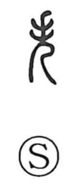

失

Kun: ushinau, ayamaru | On: shitsu
to lose ・ to err ・ mistake
Explanation
失 pictures a ritual dancer with raised hands. The woman dances and prays until she enters an ecstatic state, losing ordinary awareness of herself. The first loss expressed by the graph is this self-forgetting or loss of consciousness.
From losing awareness, 失 broadens to losing anything that had been held: a possession, an opportunity, a memory, or control of an action. An action that slips out of its proper course becomes a mistake or failure.
Related dancing figures emphasize other postures. 夭 shows the body inclined in the dance; 失 centres on the dancer carried beyond ordinary self-possession. That original loss remains recognizable in the later general meaning ‘lose.’